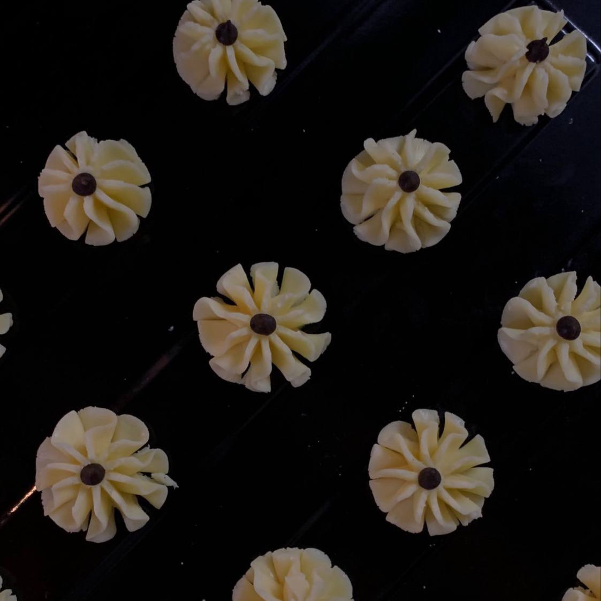

Baking
Baking is more than just a hobby for me; it's a passion that brings me joy and relaxation. From mixing ingredients to watching them transform in the oven, every step is filled with anticipation and excitement. Baking has taught me patience, sparked my creativity, and brought me closer to loved ones through shared treats